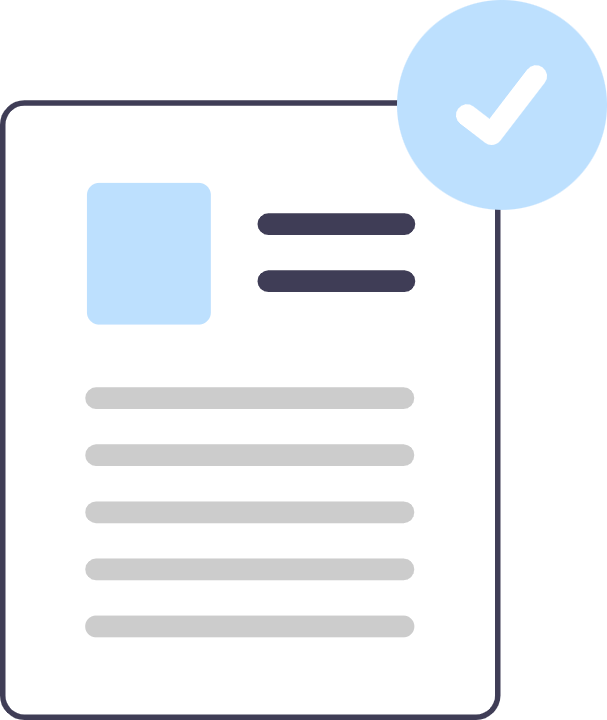
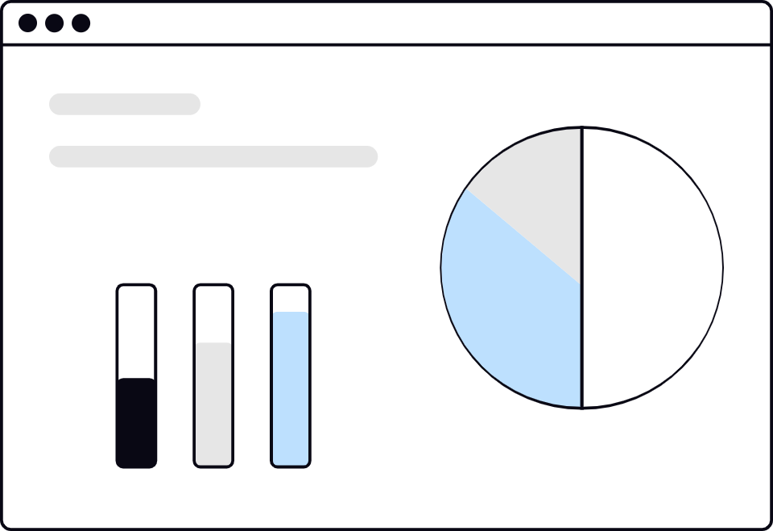

認証済み製造システム
RIXIN は完全に標準化されたデータ駆動型管理システムの下で運営し、高サイクル多キャビティ金型の全体安定性を維持します。
- ISO 9001 準拠品質システム
- トレーサブルな生産台帳
- 標準化された夜勤技術審査
私たちは単に部品を加工するだけでなく、検証します。社内品質管理システムにより、図面のすべての寸法が実物部品と完全に一致することを保証します。

RIXIN は完全に標準化されたデータ駆動型管理システムの下で運営し、高サイクル多キャビティ金型の全体安定性を維持します。

出荷ごとに完全な検証レポート一式を提供し、完全なトレーサビリティとエンジニアリング適合を実現します。
恒温品質ラボでは校正済み計測機器を用い、摩耗クリティカル部位とマイクロ公差のクロスチェックを実施します。
業界を選択すると、代表材料・工程検討ポイント・実績部品を確認できます。
金型部品では寸法安定性と耐摩耗性を最優先します。CNC・EDM・研削を組み合わせ、インサート、コア、キャビティの重要嵌合特性を維持します。
摩耗管理、嵌合安定、キャビティ品質の再現性が重要な高精度金型案件を支援します。
耐摩耗性、寸法保持性、金型安定性を重視した工業グレード材料を選定します。
離型性、耐摩耗性、長期再現性を高める表面仕上げを適用します。
初品検査、工程内寸法確認、出荷前最終検証を含む段階別品質管理を実施しています。同じ管理ロジックを試作から量産まで継続し、判定基準の一貫性を維持します。
はい。一般的な樹脂・金属以外にも、要件に応じて特殊グレードの調達に対応します。材料置換は性能、適合性、納期影響を踏まえて評価します。
重要特性に対しては CNC・EDM・研削を組み合わせた工程設計を行い、校正済み設備で寸法検証します。判定は公称寸法だけでなく図面上の重要点に基づきます。
納期計画は設計レビュー、工程準備、生産枠に分けて管理します。リピート案件では蓄積ノウハウを活用し、立上げ期間短縮と承認リスク低減を図ります。
顧客データはアクセス権限管理、役割別共有、記録付きコミュニケーション手順で管理しています。NDA に沿った運用を案件立上げ時から適用し、ライフサイクル全体で情報露出を最小化します。